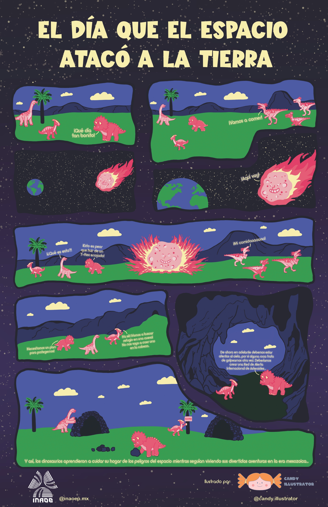
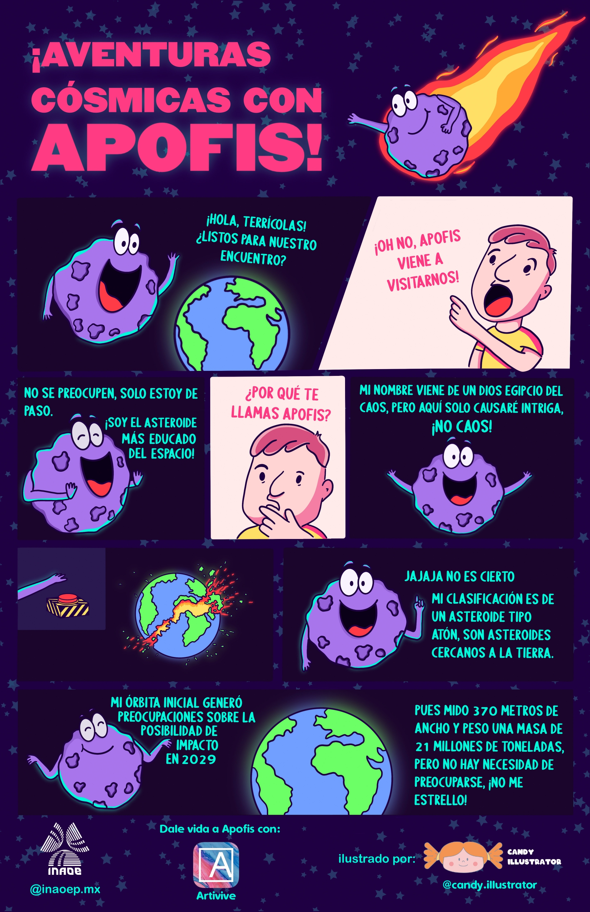

El día que el espacio atacó a la Tierra
Asteroides
¿Qué es un asteroide?
¿Cómo se nombran a los asteroides?
¿Qué es una familia de asteroides?
¿Cuál es la taxonomía de los asteroides?
Fotometría
MPO Canopus
Análisis de Fourier
Espectroscopía
Infografías
Impactos en México
Impactos en el mundo
Acercamientos
Biografías
Riesgo de impacto
Probabilidad de un impacto
Red Internacional de Alerta de Asteroides
Cultura Popular
Introducción
Libros
Películas
Música
Videojuegos
Historieta
Actividades
Curvas de luz
Órbitas
Taxonomía
Nombres
Glosario
Aprender más
Rayos cósmicos
CCD
Repositorio
Día del asteroide
Contacto
El día que el espacio atacó la Tierra

Aventuras cósmicas con Apofis

La historia fue elaborada por alumnos de la BUAP e ilustrada por @candy.illustrator